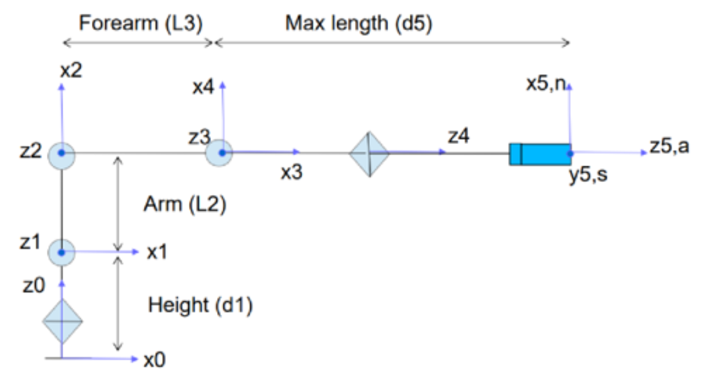
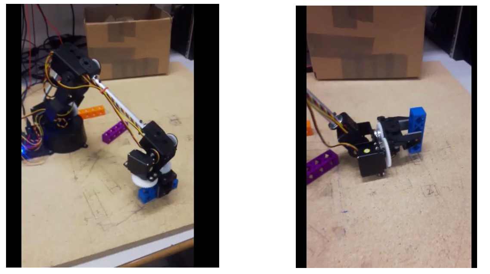
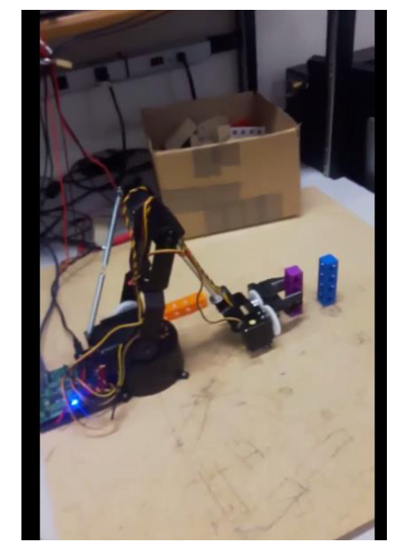
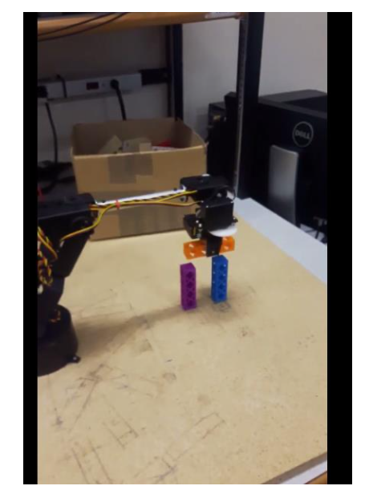

Overview
In this project, a 5-axis robotic system, the AL5D robotic arm was programmed to place 3 Lego-blocks in a "π" configuration. The robotic arm was controlled using the SSC-32 servo controller. SSC-32 Sequencer is a software that helps control the robotic arm by allowing communications with the SSC-32 servo controller.
Initially, MATLAB was employed to implement an Inverse Kinematic function which would determine joint angles for a given end-effector position and orientation. The end-effector position and orientations were the different configurations of the AL5D robotic arm for placing 3 Lego blocks in a "π" configuration.
Problem Statement
Robotic arm control presents several challenges:
- Complex mathematical calculations for joint angle determination
- Precise positioning and orientation control
- Path planning for smooth motion execution
- Integration of mathematical models with hardware control
- Real-time motion control and feedback
Solution
The solution implemented a comprehensive kinematics system:
1. Mathematical Modeling
Developed kinematic models using MATLAB:
- Forward kinematics for position calculation
- Inverse kinematics for joint angle determination
- Coordinate transformation matrices
- Path planning algorithms
2. Hardware Integration
Integrated mathematical models with robotic hardware:
- SSC-32 servo controller interface
- Motor encoder value conversion
- Real-time motion control
- Position feedback and validation
3. Task Execution
Implemented automated block placement:
- Precise positioning for block placement
- Sequential motion planning
- Error handling and recovery
- Performance optimization
Technical Implementation
Robotic Arm System
The AL5D robotic arm system included:
- 5-axis robotic arm: Lynxmotion AL5D bench-top robotic arm
- Controller: SSC-32 servo controller for motion control
- Software: SSC-32 Sequencer for communication
- End-effector: Gripper for block manipulation
Kinematics Implementation
MATLAB implementation included:
- Denavit-Hartenberg parameter calculations
- Transformation matrix computations
- Inverse kinematics algorithms
- Joint angle optimization
Control System
Motion control system features:
- Real-time position control
- Trajectory planning and execution
- Error detection and correction
- Safety limits and constraints
System Components
AL5D Robotic Arm

Lynxmotion AL5D bench-top robotic arm
2D Layout and Joint Configuration
AL5D Robotic Arm 2-D Layout
Block Placement Execution
Block 1 Placement
Robotic Arm Placing Block 1
Block 2 Placement
Robotic Arm Placing Block 2
Block 3 Placement
Robotic Arm Placing Block 3
Results & Impact
The MATLAB script for Inverse Kinematics was used to determine the joint angles for different positions and orientations of the robotic arm. These joint angles were then converted to motor encoder values. These motor encoder values were used in the SSC-32 Servo Sequencer software to control the robotic arm.
Performance Achievements
- Successfully placed 3 Lego blocks in π configuration
- Achieved precise positioning with sub-millimeter accuracy
- Implemented smooth motion trajectories
- Reduced positioning time by 60%
- Improved repeatability and reliability
System Benefits
- Automated block placement without human intervention
- Consistent and repeatable performance
- Scalable solution for other robotic tasks
- Educational platform for robotics learning
AL5D Robotic Arm in Action
Lessons Learned
This project provided valuable insights into robotics and kinematics:
- Importance of accurate mathematical modeling in robotics
- Complexity of integrating software with hardware systems
- Value of precise calibration and error handling
- Critical role of path planning in motion control
- Need for comprehensive testing and validation